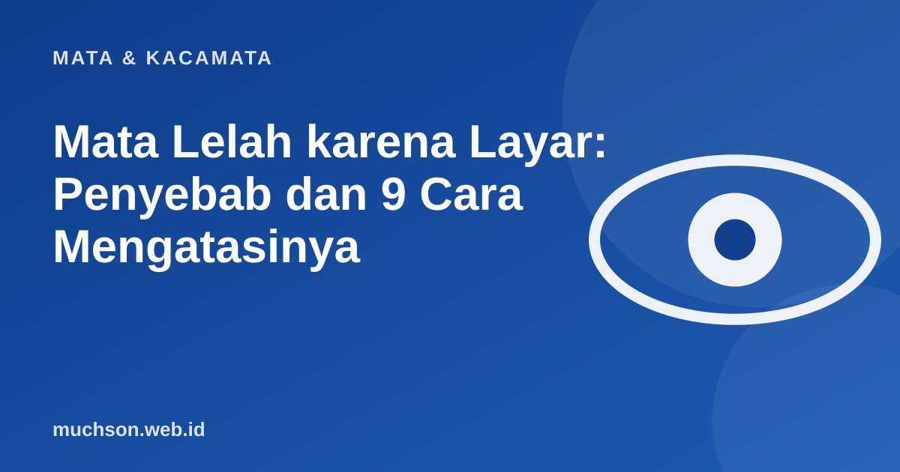

Beranda › Artikel › Mata & Kacamata
Mata & KacamataMata Lelah karena Layar: Penyebab dan 9 Cara Mengatasinya
Bekerja, belajar, hiburan, semuanya kini lewat layar, sehingga keluhan mata lelah menjadi sangat umum. Kabar baiknya, sebagian besar penyebabnya adalah kebiasaan yang bisa diubah hari ini, tanpa membeli apa pun.

Apa yang sebenarnya terjadi pada mata?
Menatap layar membuat mata bekerja keras dengan tiga cara sekaligus. Pertama, otot fokus terus tegang karena jarak pandang dekat dan tetap. Kedua, kita berkedip jauh lebih jarang, sehingga permukaan mata kering. Ketiga, silau, pantulan, dan kontras layar yang tidak nyaman memaksa mata terus menyesuaikan diri. Gabungan ini disebut digital eye strain atau computer vision syndrome.
Gejala yang umum
- Mata perih, panas, atau terasa berpasir.
- Pandangan buram sementara.
- Sakit kepala ringan di sekitar dahi atau pelipis.
- Leher dan bahu pegal.
- Sulit fokus berpindah dari layar ke objek jauh.
Sembilan cara yang masuk akal
- Aturan 20-20-20. Setiap 20 menit, lihat benda sejauh sekitar 6 meter selama 20 detik.
- Berkedip penuh. Sengaja berkedip beberapa kali, terutama saat fokus.
- Jarak layar. Sekitar satu lengan dari mata, dan bagian atas layar sejajar atau sedikit di bawah mata.
- Cahaya ruangan. Hindari ruangan gelap dengan layar terang; hindari silau jendela di belakang layar.
- Kecerahan dan ukuran huruf. Sesuaikan dengan cahaya ruangan, perbesar huruf agar tidak menyipit.
- Mode gelap/terang. Pilih yang paling nyaman; tidak ada yang mutlak lebih baik.
- Tetes air mata buatan. Bila mata kering, gunakan sesuai anjuran dokter atau apoteker.
- Periksa ukuran kacamata. Minus, plus, atau silinder yang belum terkoreksi memperberat keluhan.
- Istirahat tubuh. Berdiri, regangkan leher dan bahu setiap jam.
Seberapa baik kebiasaan layar Anda?
Jika keluhan tidak membaik setelah memperbaiki kebiasaan, atau muncul nyeri hebat, mata merah menetap, atau penglihatan berubah mendadak, periksakan ke dokter mata. Jangan menunda.